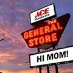
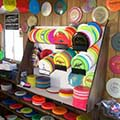

- The General Store
The General Store is a folfer's candystore. Their selection of discs is unmatched in Spokane, and they have lots of other gear such as bags, shirts and portable baskets. - Stimpi Ridge Pro Shop
The pro shop out at Stimpi Ridge DGC is pretty well-stocked, and is open by appointment. - REI
Of course your outdoor headquarters has your basic folfing needs taken care of.